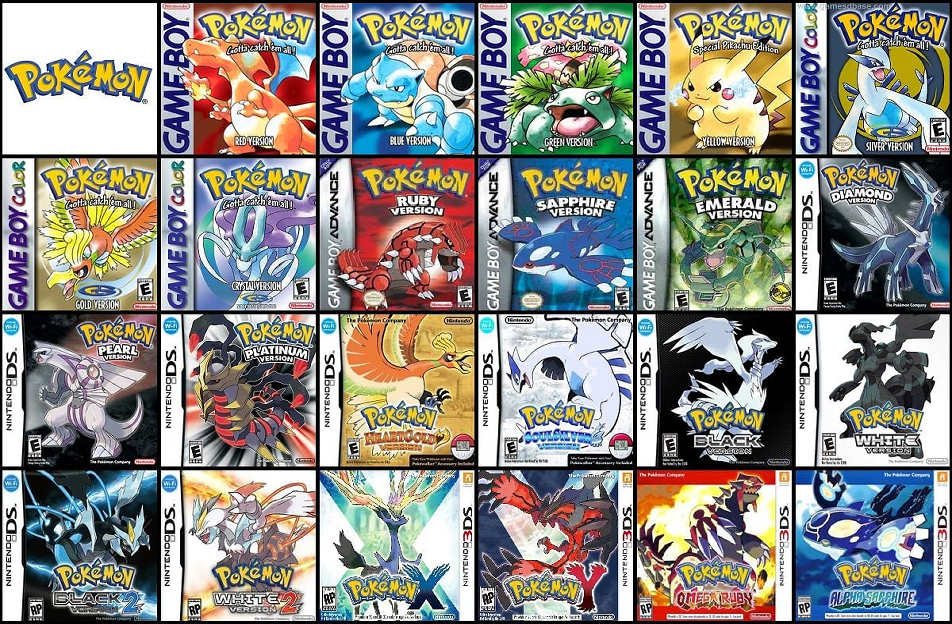

Welcome!
For my webpage, I chose to do research on the Nintendo Pokemon games that began in 1996 and
are still continuing today.
These games are probably my most favorite and have a really special place in my heart as the first video games I
fell in love with.
The Pokemon franchise as a whole is something that I've always really enjoyed, and these games are full of data
that I could pull from
to make my project interesting. My research only includes the main series games, meaning side games like
Colosseum, Stadium, and GO are
not included.
I contemplated at first to focus on all of the Pokemon in the franchise and use data on their stats, types,
generation they were
introduced, ect, but I figured I'd find a lot more information if I looked at the stats of the games themselves.
This included game
data such as how many Pokemon were in each game, how many items, the region it takes place in, the generation,
and many other stats.
I also wanted to look into the release dates of each game and what platforms they are available on. This route
gave me a plethora of
solid information to choose from, and I found that I had much more than I actually needed, which I consider to
be a good problem to have.
The main resources that I used to collect this information were Bulbapedia and Serebii.net, two sites that are
made specifically for
information on the Pokemon games and franchise. Nearly all the information I collected I was able to find on
either of these websites,
and it made my life a lot easier when I started organizing my data. I also found some forums on Reddit and other
similar sites for
specifics, such as how many Pokemon you're able to catch in each game.
Through my research, I drew a lot of conclusions, some more obvious than others. A pretty apparent one is how
with each generation, the
number of Pokemon, items, and abilities became greater. I found it interesting that within a generation, where 3
to 6 games are introduced,
only Generation 8 introduced more Pokemon in the middle of the generation. I also found it interesting that once
Generation 7 began, HM's
(Hidden Machines) were removed from the games, and never made another appearance. There are many other things I
discovered through my
research, but the main takeaway is that I discovered a lot of trends within the data that were very interesting
and gave me more insight
into the nitty gritty of these games.
